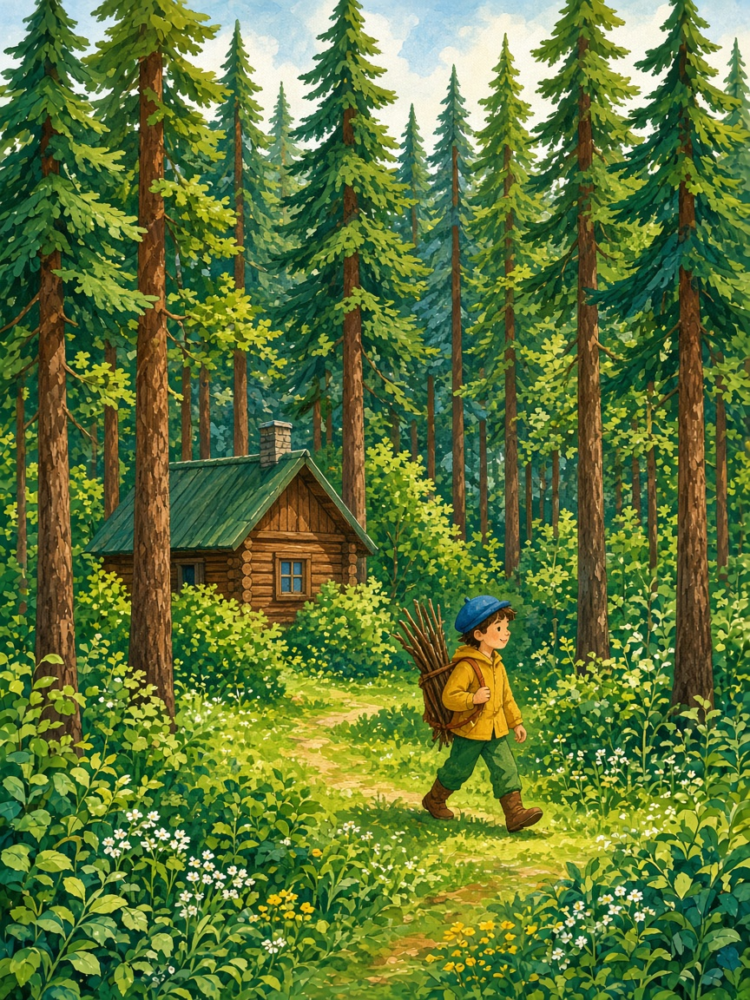
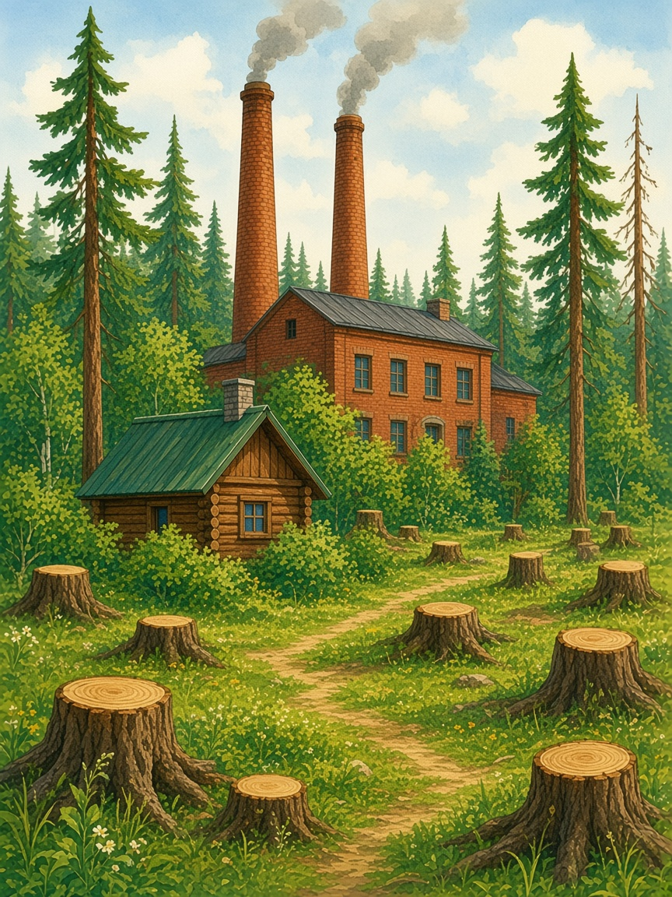
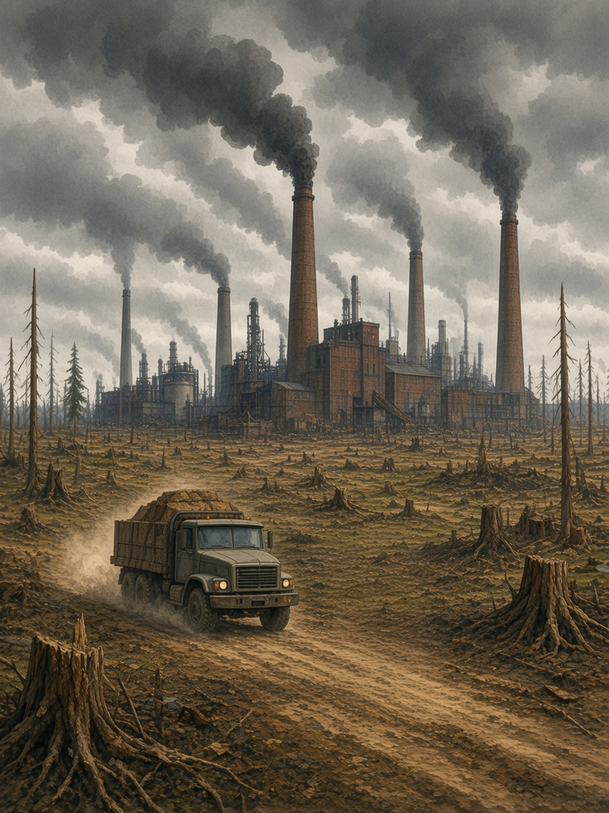

The forests disappear Machines and the lost forests היערות נעלמים המכונות והיערות שנעלמו
By the end of this page, say why the forests disappeared. By the end of this page, explain why so many forests were cut down. בסוף העמוד תוכלו לומר למה היערות נעלמו. בסוף העמוד תוכלו להסביר מדוע נכרתו יערות רבים.
A task A task משימה משימה
Ask your neighbors: Do you use wood for cooking and heating? Why? Write their answers in a notebook. Ask your neighbors whether they use wood for cooking and for heating, and why. Write the answers in a notebook. שאלו שכנים: אתם מבשלים או מחממים עם עץ? למה? כתבו את התשובות במחברת. שאלו כמה שכנים אם הם משתמשים בעץ כדי לבשל ולחמם את הבית, ומדוע. כתבו במחברת מה ענו.
When people used wood only to cook and to heat, they needed a little wood. About 200 years ago, people made machines with engines. The machines needed a lot of fuel, so people burned a huge amount of wood. While people used trees only for heating and cooking, they needed a small amount of wood. About two hundred years ago they invented machines with engines. Those machines needed a great deal of fuel, so enormous amounts of wood were burned. כשהשתמשו בעץ רק לבישול ולחימום, לקחו מעט עצים. לפני כמאתיים שנה באו מכונות עם מנועים. בשביל המכונות שרפו המון עצים. כל זמן שבני האדם השתמשו בעצים רק לחימום ולבישול, הם נזקקו לכמות קטנה. לפני כמאתיים שנה המציאו מכונות עם מנועים. כדי להפעיל אותן נשרפו כמויות עצומות של עצים.
About 100 years ago this land had many forests. Wood was burned to run the train from Jaffa to Jerusalem. The forests did not grow back. This country also had many forests until about one hundred years ago. During Turkish rule, a very large amount of wood was burned to run the railway, mainly the line between Jaffa and Jerusalem. The forests were destroyed and did not grow again. לפני כמאה שנים היו בארץ הרבה יערות. עצים הפעילו את הרכבת מיפו לירושלים. היערות לא צמחו שוב. גם בארץ היו יערות רבים עד לפני כמאה שנים. בימי השלטון התורכי שרפו עצים רבים כדי להפעיל את הרכבת, בעיקר בין יפו לירושלים. היערות הושמדו ולא צמחו מחדש.


